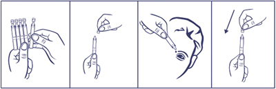
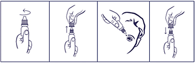

|
 |
| ТАУСТИН (TAUSTIN) taurine капли глазные | ||||||
|
Клинико-фармакологическая группа: Препарат, стимулирующий процессы регенерации для местного применения в офтальмологии Номер и дата регистрации: ЛП-003135 от 10.08.15 Код ATX: S01XA |
Владелец регистрационного удостоверения: зарегистрировано и произведено Представительство: | |||||
Форма выпуска, состав и упаковка ◊ Капли глазные в виде прозрачной, бесцветной жидкости.
Вспомогательные вещества: метилпарагидроксибензоат - 1 мг, 0.25M раствор натрия гидроксида или хлористоводородной кислоты - до pH 4.0-6.5, вода д/и - до 1 мл. 0.4 мл - тюбики-капельницы полиэтиленовые или полипропиленовые (20) - пачки картонные. | ||||||
| ||||||
Описание препарата основано на официально утвержденной инструкции по применению и утверждено компанией-производителем для издания 2022 г. | ||||||
Фармакологическое действие |
Фармакокинетика |
Показания |
Режим дозирования |
Побочное действие |
Противопоказания |
Беременность и лактация |
Особые указания |
Передозировка |
Лекарственное взаимодействие |
Условия хранения и сроки годности |
Условия реализации
Фармакологическое действие
Противокатарактное средство, оказывает метаболическое действие. Таурин является серосодержащей аминокислотой, образующейся в организме в процессе превращения цистеина. Стимулирует процессы репарации и регенерации при заболеваниях дистрофического характера и заболеваниях, сопровождающихся резким нарушением метаболизма глазных тканей. Способствует нормализации функций клеточных мембран, активизации энергетических и обменных процессов, сохранению электролитного состава цитоплазмы за счет накопления К+ и Са2+, улучшению условий проведения нервного импульса. Показания
В составе комплексной терапии при:
Режим дозирования
Препарат применяют местно в виде инстилляций. При катаракте - по 1-2 капли 2-4 раза/сут в течение 3 месяцев. Курс повторяют с месячным интервалом. При травмах и дистрофических заболеваниях роговицы применяют в тех же дозах в течение 1 месяца. При открытоугольной глаукоме (в сочетании с бета-адреноблокаторами) по 1-2 капли 2 раза/сут за 15-20 мин до назначения одного из местных гипотензивных средств, в течение 6 недель с последующей отменой на 2 недели. Порядок работы с тюбиком-капельницей  1. Отделить одну тюбик-капельницу, остальные поместить обратно в упаковку. 2. Вскрыть тюбик-капельницу (убедившись, что раствор находится в нижней части тюбика-капельницы, вращающими движениями повернуть и отделить клапан). 3. Закапать необходимое количество препарата в глаза. Доза, содержащаяся в тюбике-капельнице, достаточна для одного закапывания в оба глаза. 4. Закрыть тюбик-капельницу клапаном. Вскрытую тюбик-капельницу можно хранить в течение 1 месяца, затем тюбик-капельницу следует выбросить. Порядок работы с флаконом  1. Вращающими движениями против часовой стрелки открыть флакон и снять колпачок. 2. Осторожно, не касаясь пальцами наконечника флакона, перевернуть флакон, зафиксировать между большим и указательным пальцами одной руки. 3. Запрокинуть голову назад, расположить наконечник флакона над глазом и указательным пальцем другой руки оттянуть нижнее веко вниз. Слегка надавить на флакон и закапать необходимое количество препарата в конъюнктивальный мешок глаза. Необходимо избегать контакта наконечника открытого флакона с поверхностью глаза и руками. 4. После использования надеть колпачок на флакон и закрыть вращающими движениями по часовой стрелке. После вскрытия флакона препарат можно использовать в течение 1 месяца. По истечении этого срока препарат следует выбросить. При видимых повреждениях флакона применять препарат не следует. Препарат следует применять только согласно тем показаниям, тому способу применения и в тех дозах, которые указаны в инструкции. Побочное действие
Возможно: аллергические реакции. Если указанные в инструкции побочные эффекты усугубляются или отмечаются любые другие побочные эффекты, не указанные в инструкции, пациенту необходимо сообщить об этом врачу. Применение при беременности и кормлении грудью
Назначение препарата в период беременности и грудного вскармливания возможно только в том случае, если предполагаемая польза для матери превышает потенциальный риск для плода или ребенка. Перед применением препарата Таустин, если женщина беременна или предполагает, что могла бы быть беременной, или планирует беременность, необходимо проконсультироваться с врачом. В период грудного вскармливания перед применением препарата Таустин необходимо проконсультироваться с врачом. Особые указания
При необходимости одновременного использования других офтальмологических лекарственных препаратов (в т.ч. глазных капель), интервал между применением таурина и других препаратов должен составлять не менее 10-15 мин. При применении нескольких лекарственных препаратов для местного применения в офтальмологии глазные мази используются последними. Консервант, содержащийся в препарате, может оказывать раздражающее действие на глаз при наличии контактных линз, поэтому любые контактные линзы следует вынуть перед закапыванием и установить не ранее чем через 15 мин после применения препарата Таустин. Влияние на способность к управлению транспортными средствами и механизмами Применение препарата не оказывает влияния на управление автотранспортом и занятия потенциально опасными видами деятельности, требующими повышенной концентрации внимания и быстроты психомоторных реакций. Лекарственное взаимодействие
У больных глаукомой (открытоугольной) отмечено значительное усиление гипотензивного действия бета-адреноблокаторов в случае совместного применения с таурином. Усиление эффекта достигается за счет увеличения коэффициента легкости оттока и снижения продукции водянистой влаги. Если пациент применяет вышеперечисленные или другие лекарственные препараты (в т.ч. безрецептурные), перед применением препарата Таустин необходимо проконсультироваться с врачом. |
||||||
Вернуться наверх |
||||||
Copyright © Справочник Видаль «Лекарственные препараты в России», Москва, Россия